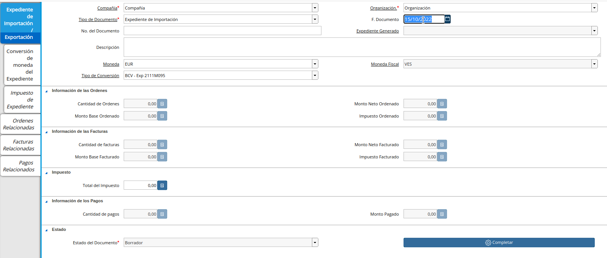

ocexpgeneradoimport.png
Importación
Dicha importación tiene como consecuencia para la empresa nacional la generación de gastos aduanales, sujetos al pago de tributos o al amparo de las franquicias correspondientes.
Expediente de Importación
El expediente de importación representa la agrupación fiscal para un proceso de importación y es quién da paso al proceso de importación.
Ubique y seleccione en el menú de ADempiere, la carpeta “Gestión de Importación y Exportación” y luego seleccione la ventana “Expediente de Importación/Exportación”.
Imagen 1. Menú de ADempiere
Seleccione el tipo de documento **”Expediente de Importación”.
Imagen 2. Tipo de Documento
Introduzca la fecha del expediente.

Imagen 3. Fecha de Documento
Introduzca el número del expediente asignado en el campo Número de Documento.
Imagen 4. Fecha de Documento
Introduzca la moneda en la cuál gestionará el expediente, es decir, la moneda de la compra de la mercancía.
Imagen 5. Moneda de Documento
Introduzca el tipo de conversión en la cuál gestionará el expediente, recuerde que generalmente es el tipo de cambio de curso legal.
Imagen 6. Tipo de Cambio de Documento
Note
El campo Moneda de Fiscal es la moneda de curso legal y es cargada automáticamente.
Vaya a la siguiente pestaña Tipo de Conversión Negociada, para establecer la tasa asignada al expediente de importación.
Imagen 7. Tipo de Cambio de Documento
Indique el monto de la tasa de cambio asignada al expediente de importación.
Imagen 8. Tipo de Cambio de Documento
Vea el expediente generado en el campo Expediente Generado, este registro es el valor utilizado para consultar los registros en reportes administrativos y contables.
Imagen 9. Tipo de Cambio de Documento
Note
Tome en cuenta que esta tasa de cambio será tasa con la que cada documento imputado en la importación es convertido, es decir al establecer el expediente en un documento, automáticamente será establecida la tasa negociada.
Proceda a completar el documento para que su expediente tenga validez en los documentos que fungen como costo CIF o costo FOB.
A continuación se detalla los campos que son actualizados de manera automática:
Monto Base Ordenado: El campo aumenta al completar una orden de compra asociada al Expediente, al igual que actualiza la pestaña Ordenes Relacionadas.
Cantidad de Ordenes: El campo aumenta al completar una orden de compra asociada al Expediente.
Monto Neto Ordenado: El campo aumenta al completar una orden de compra asociada al Expediente.
Impuesto Ordenado: El campo aumenta al completar una orden de compra asociada al Expediente, al igual que actualiza la pestaña Facturas Relacionadas.
Cantidad de facturas: El campo aumenta al completar las facturas asociadas al Expediente.
Monto Neto Facturado: El campo aumenta al completar las facturas asociadas al Expediente.
Impuesto Facturado: El campo aumenta al completar las facturas asociadas al Expediente.
Total del Impuesto: El campo aumenta al completar los pagos asociados al Expediente, al igual que actualiza la pestaña Pagos Relacionados.
Cantidad de pagos: El campo aumenta al completar los pagos asociados al Expediente
Monto Pagado: El campo aumenta al completar los pagos asociados al Expediente
Orden de Compra de Importación
Ubique y seleccione en el menú de ADempiere, la carpeta “Gestión de Compras” y luego seleccione la ventana “Órdenes de Compra”.
Imagen 10. Menú de ADempiere

Realice el procedimiento regular para realizar una orden de compra, explicado en el material Registro de Orden de Compra Directa.
Imagen 11. Orden de Compra Importación sin Completar

Asigne el expediente creado anteriormente en el campo Expediente Importación/Exportación.
Imagen 12. Expediente de Importación
Note
Al colocar el expediente se establece el tipo de conversión negociado y el Expediente Generado.
Seleccione la opción “Completar”, ubicada en la parte inferior derecha del documento.
Imagen 13. Opción Completar Documento

Seleccione la acción “Completar” y la opción “OK” para completar el documento “Orden de Compra”.
Imagen 14. Acción Completar

Podrá visualizar en la parte inferior de la orden de compra, el campo en estado “Completo” y el resultado de la conversión configurada anteriormente.
Imagen 15. Orden de Compra Completa

Crear Documento por Pagar de Mercancía
Ubique y seleccione en el menú de ADempiere, la carpeta “Gestión de Compras” y luego seleccione la ventana “Documentos por Pagar”.
Imagen 16. Menú de ADempiere

Realice el procedimiento regular para realizar un documento por pagar desde una Orden de Compra, explicado en el material Registro de Documento por Pagar.
Imagen 17. Factura de Cuentas por Pagar Importación

Note
Al crear desde la orden de compra establecerá el expediente asociado a la orden de compra, y establece el tipo de conversión negociado.
Asigne el expediente creaado anteriormente en el campo Expediente Importación/Exportación.
Imagen 18. Expediente de Importación
Note
Al colocar el expediente se establece el tipo de conversión negociado.
Crear Documento por Pagar de Costos CIF
Ubique y seleccione en el menú de ADempiere, la carpeta “Gestión de Compras” y luego seleccione la ventana “Documentos por Pagar”.
Imagen 16. Menú de ADempiere
Realice el procedimiento regular para realizar un documento por pagar desde una Orden de Compra, explicado en el material Registro de Documento por Pagar.
Imagen 17. Factura de Cuentas por Pagar Importación
Note
Al crear desde la orden de compra establecerá el expediente asociado a la orden de compra, y establece el tipo de conversión negociado.
Asigne el expediente creaado anteriormente en el campo Expediente Importación/Exportación.
Imagen 18. Expediente de Importación
Note
Al colocar el expediente se establece el tipo de conversión negociado.
Cancelación de Factura
Realice el procedimiento regular para realizar un documento de selección de pagos desde una factura de cuentas por pagar, explicado en el material Registro desde Selección de Pago, esto cancelará el pasivo con el proveedor de mercancía.